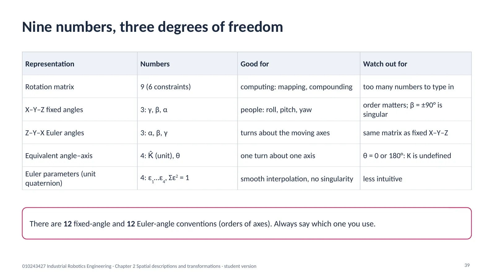
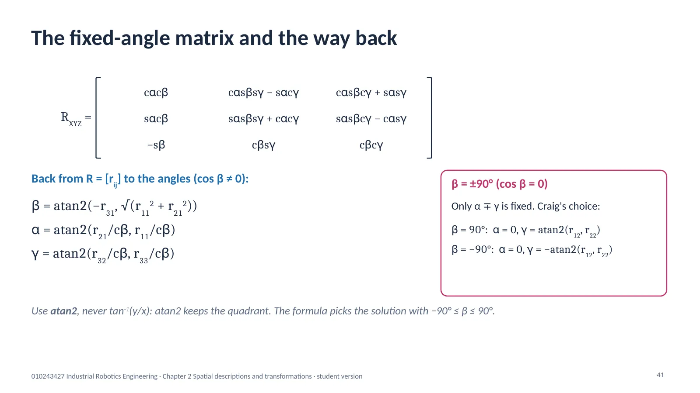
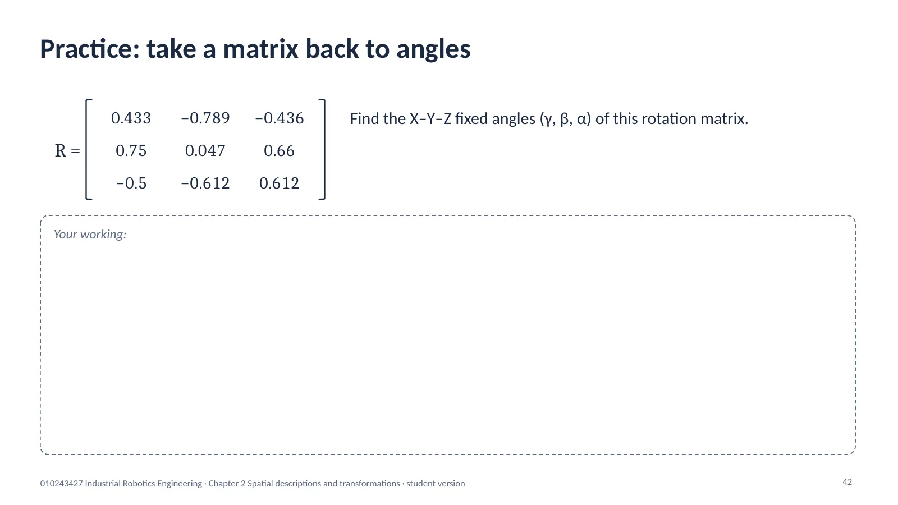
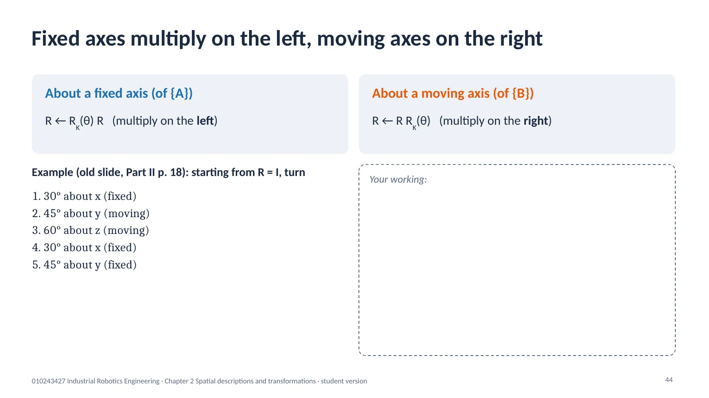
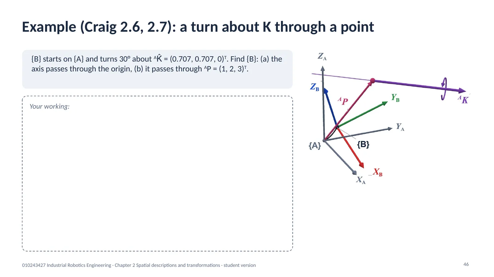

เมทริกซ์การหมุนมี 9 ตัวเลขแต่มีอิสระเพียง 3 คนจึงบอกการวางตัวด้วยมุมสามมุม (มุมแกนตรึง หรือมุมออยเลอร์) หรือด้วยแกนกับมุม หรือพารามิเตอร์ออยเลอร์ (ควอเทอร์เนียนหนึ่งหน่วย) หน้านี้ครอบคลุมสไลด์หน้า 39–48 (Craig 2.8) มี เครื่องมือ 2 ชิ้น (A, B) และ 4 โจทย์ รวมการบ้านข้อ 2.2 ส่วนการหมุนรอบแกนใด ๆ และพารามิเตอร์ออยเลอร์ใช้เรียนเองได้จากโจทย์ข้อ 3
A rotation matrix has 9 numbers but only 3 are free, so people give an orientation as three angles (fixed angles or Euler angles), as an axis and an angle, or as Euler parameters (a unit quaternion). This page covers slides pp. 39–48 (Craig 2.8). It has two tools (A, B) and 4 problems, including homework 2.2; problem 3 is the self-study part on the angle–axis form and Euler parameters.

ย้อนจาก R = [rij] ไปหามุม (เมื่อ cos β ≠ 0) ใช้ atan2 ทุกตัวเพื่อให้ได้จตุภาคถูก สูตรเลือกคำตอบที่ −90° ≤ β ≤ 90°
Back from R = [rij] to the angles (when cos β ≠ 0). Use atan2 every time so the quadrant comes out right; the formulas pick the solution with −90° ≤ β ≤ 90°.

เมื่อ β = 90° แกน XB หลังหมุนขั้นแรกถูกพับไปทับแกน ZA การหมุนรอบ XA (γ) กับรอบ ZA (α) จึงหมุนรอบแกนเดียวกัน เลื่อน α กับ γ ไปในทิศเดียวกันเท่า ๆ กัน: ถ้าผลต่าง α − γ คงที่ เฟรมไม่ขยับเลย สูตรย้อนกลับหาได้เพียงผลต่าง Craig จึงกำหนด α = 0 แล้วให้ γ รับผลต่างทั้งหมด
At β = 90° the first turn's axis XB has been folded onto ZA, so turning about XA (γ) and about ZA (α) turn about the same line. Move α and γ by the same amount: while α − γ stays the same the frame does not move at all. The way back can only find the difference, so Craig sets α = 0 and lets γ carry it.

